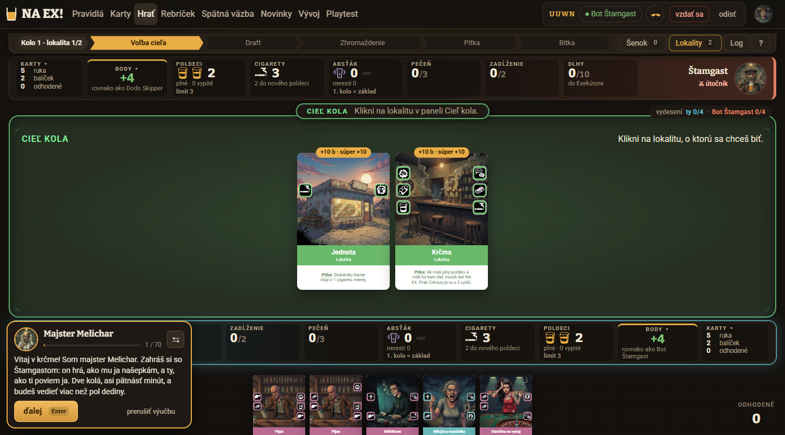
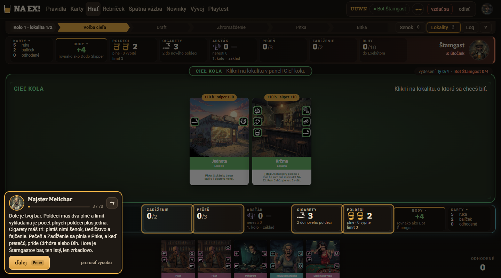
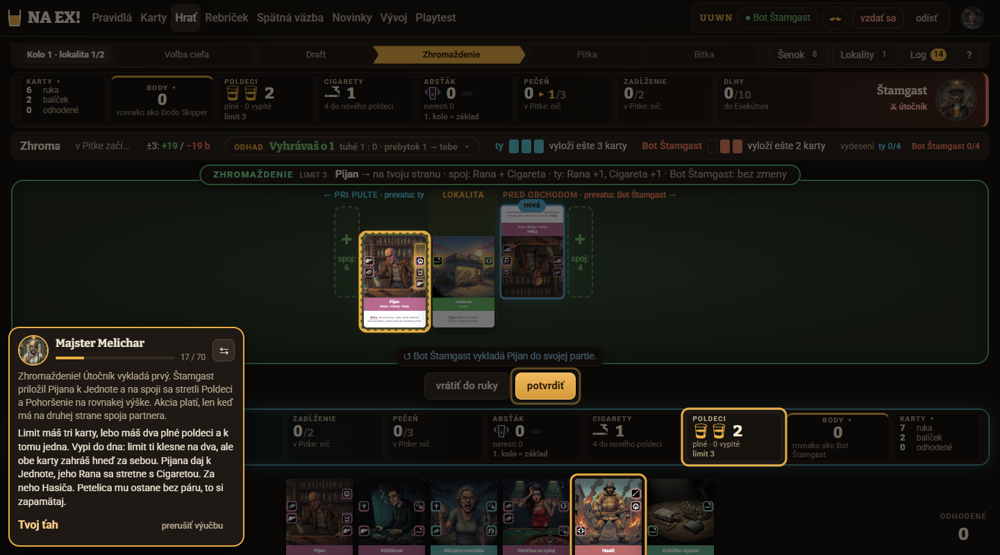
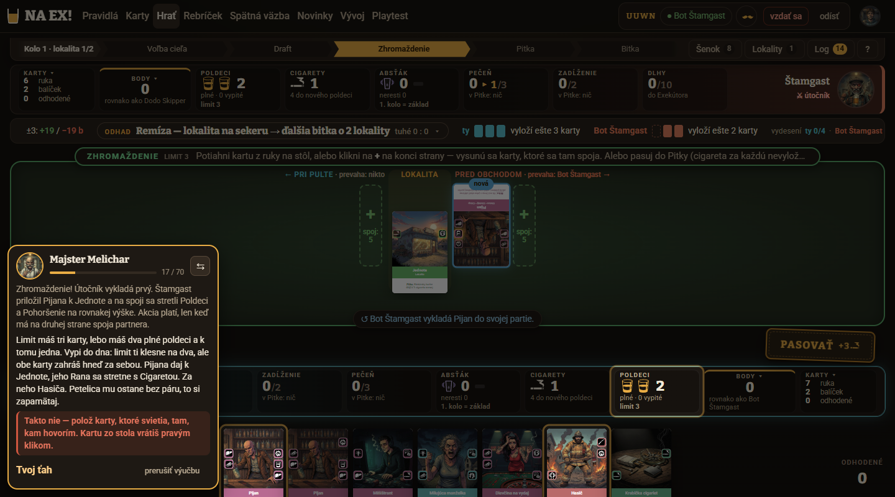
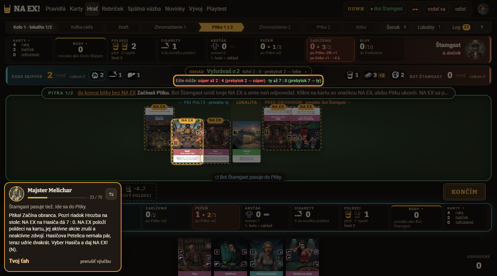
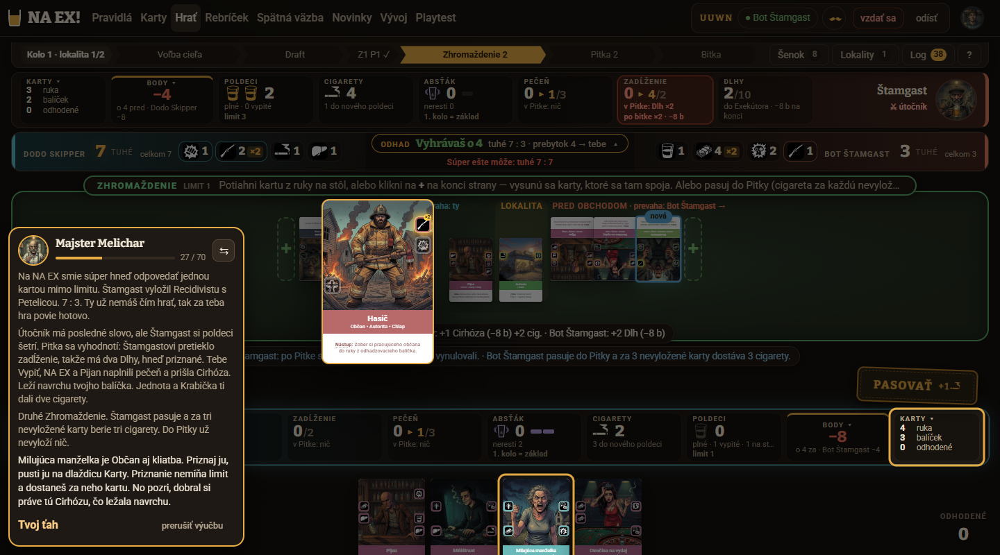
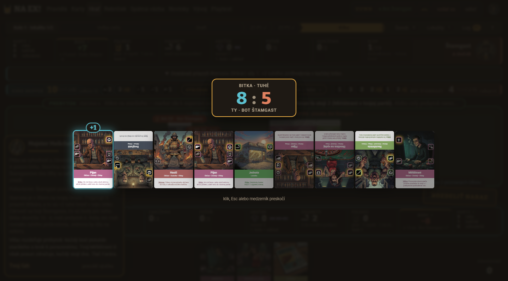
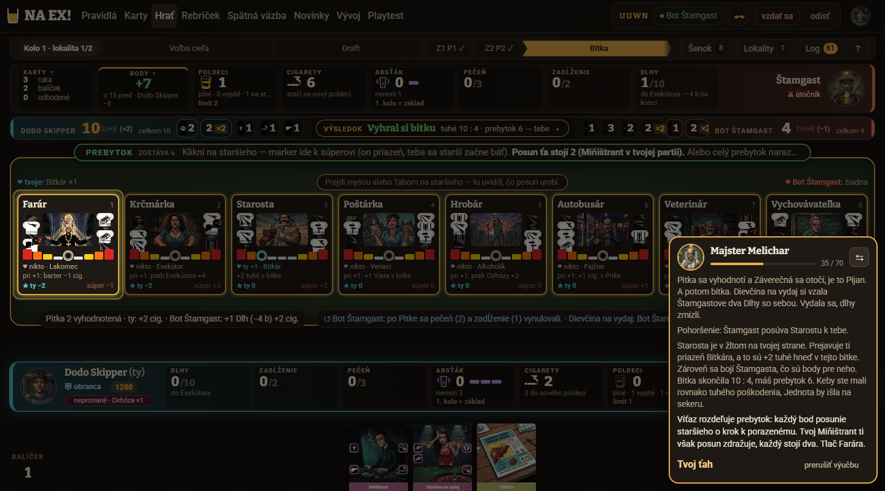

Výučba „Prvá hra“ — aby sa nováčik naučil hrať, nie len klikať
Verdikt. Výučba dnes učí ovládanie a slovník, nie hru. Nováčik 32-krát urobí presne to, čo svieti, ale tri veci, na ktorých hra stojí — spoj, ako vzniká číslo v bitke a cena a zisk NA EX — sa nikde nezastavia a nevysvetlia; počítadlo tuhého a riadok Hrozba na stole pritom existujú, len na ne Melichar neukáže. K tomu výučba sama navádza na chybu: po prvej karte viackartového ťahu rozsvieti „potvrdiť“, ťah odmietne hláškou „Takto nie“ a zmaže, čo hráč položil (14 z 15 odmietnutí; pätnáste bola zlá kópia Pijana v k50).
Najväčší zisk pre pochopenie prinesie prepis scenára na „pokyn — prečo“ s jedným pojmom na krok a pauzou po každom dôsledku (N1, N3) a kontrolné otázky s rozhodnutiami (N2). Ako prvé však treba spraviť rýchlu výhru N4 — viackartový ťah, ktorý sa nedá pokaziť — inak ďalší playtest znova zmeria hlavne frustráciu.
Používatelia a ich úlohy
- Nováčik, ktorý chce hrať (návštevník po prvom kliku na Hrať, ponuka
PonukaVyucby): „Chcem pochopiť, o čo ide a čo mám robiť, aby som si trúfol na partiu.“ Úspech = vie odpovedať na 8 otázok testu a má vlastný plán (otázka 8). - Netrpezlivý (Dodo): číta len prvú vetu, chce tempo a možnosť preskočiť. Úspech = žiadne zaseknutie, pokyn v prvej vete.
- Systematická (Katka) a poctivá čitateľka (Marta): chcú „prečo“ a vysvetlené slová; nad ~40 slov prestávajú čítať (Marta: „do 40 slov som každý krok pochopila, nad 80 som prestala čítať“).
- Vracajúci sa hráč: zopakovať si pravidlá; dnes môže len prejsť celých 70 krokov znova.
Telefón: herný stôl je na mobile vypnutý („Tu sa NA EX! zatiaľ hrať nedá“), výučba teda tiež — návrh rieši počítač a tablet na šírku, s dôrazom na malý notebook 1366 × 650 (Katka).
1. Mapa pochopenia
Test pochopenia má 8 otázok. Pri každej: kde ju výučba dnes učí, ako dopadla (úplne správne z 3), prečo a ktorý návrh to rieši. Návrhy sú zoradené podľa toho, koľko otázok zdvihnú.
| Otázka | Dnes učí | Správne | Prečo to nesedí | Návrh |
|---|---|---|---|---|
| 1 Cieľ hry | i-ciel, i-koniec | 1/3 | Body sa vysvetlia raz na začiatku a raz na konci (60 slov, 7 čísel). Prečo je lokalita 28 bodov, nikto nepochopil; okamžitú výhru vydesením spomenula len Katka. | N1 (i-koniec s klikom na Body), N2 otázka E, N3 zhrnutie |
| 2 Priebeh kola | nikde súvislo | 1/3 | Os kola hore (Voľba cieľa → Draft → Zhromaždenie → Pitka → Bitka) existuje, ale Melichar na ňu nikdy neukáže; „Draft“ na osi vs. „stavba šenku“ v texte. | N1 (i-ciel s osou kola), N2 otázka „po Pitke“, N3 kapitoly |
| 3 Zhromaždenie | k9, k10 | 0/3 | Spoj je vysvetlený v jednej vete bot kroku k9, ktorý ubehne za 700 ms; k10 má 49 slov a 7 pojmov. „Prečo spoj“ — 3/3 nevie. | N1 (i-spoj, i-tuhe), N2 otázka A, N4 (krok sa nedá pokaziť) |
| 4 Pitka a NA EX | k16, k18, k43 | 1/3 | Definícia NA EX áno, ale cena (pečeň → Cirhóza, Body −8) príde v bot kroku k18 bez zastavenia. „Kedy sa oplatí“ — nikto. | N1 (i-pitka, i-cena), N2 otázka B a rozhodnutie k43 |
| 5 Bitka | k27 (v bot kroku) | 2/3 | „Tuhé“ sa prvýkrát objaví v kroku 31; vzorec Rana 1 / Pecka 2 / Petelica 3 nikde; text „Bitka skončila 10 : 4“ predbehne počítadlo, ktoré ešte ukazuje 8 : 5. | N1 (tuhé v k4, i-bitka po počítadle), N2 otázka C |
| 6 Starší | i-body, k27, k28 | 0/3 | i-body je hneď na začiatku, keď starší ešte nič neznamenajú; „priazeň tebe, strach Štamgasta“ v jednej vete s 5 pojmami (k27). | N1 (starší pri prvom prebytku), N2 otázka D |
| 7 Poldeci a cigarety | i-bar, k4–k8, k22 | 3/3 | Funguje — robí sa to rukami (limit, kupovanie, fajčenie). | ponechať, skrátiť i-bar |
| 8 Vlastný plán | nikde | 0/3 | Všetkých 32 ťahov je predpísaných a zvýraznených; Katka: „výučba mi každý ťah nadiktovala“. | N2 (rozhodnutia k43, k47), N3 (2. kolo s menšou pomocou), zhrnutie s plánom |
2. Toky dnes
Prešiel som výučbu ako nováčik po prvú bitku (kroky 1–35). Tri hlavné úlohy: začať, zahrať viackartový ťah (k10) a pochopiť bitku (k25–k28).
Úloha „zahraj Pijana a Hasiča“ (k10) — dnes
- Prečítať 2 odseky (79 slov, 7 pojmov), pokyn je v strede druhého.
- Svieti naraz Poldeci, Pijan a Hasič — bez poradia; Poldeci sa nedá kliknúť.
- Klik na Pijana, potom na „+“ — výber karty sa zruší, treba znova kliknúť Pijana.
- Po prvej karte svieti „potvrdiť“ → hráč potvrdí.
- „Takto nie — polož karty, ktoré svietia…“; Pijan sa vráti do ruky.
- Hádať: Katka 40 akcií / 265 s, Dodo 29 / 151 s.
Úloha „pochop bitku“ (k25–k28) — dnes
- Štyri kroky bota (Pitka, Záverečná, 2× Pohoršenie) prebehnú po 700 ms.
- Počítadlo bitky stmaví stôl aj bublinu a počíta 8 : 5…
- …kým bublina už píše „Bitka skončila 10 : 4“ (4 odseky, 103 slov).
- Pokyn „Tlač Farára“ je posledná veta; bublina prekrýva starších vpravo.
- Nikde: z čoho je 10 a z čoho 4. Pás tuhého s ikonami na stole Melichar neukáže.



Vyucba.tsx:117–123, 309 pridáva potvrdenie vždy).
HernaPlocha.tsx:1138–1143 zmaže návrh hneď pri odoslaní).



3. Audit použiteľnosti
Závažnosť podľa Nielsena: 4 katastrofa, 3 veľký, 2 menší, 1 kozmetický. „3/3“ = hlásili všetci traja nováčikovia.
| # | Z. | Problém | Heuristika | Dôkaz | Koho | Návrh |
|---|---|---|---|---|---|---|
| A1 | 4 | Viackartový ťah: po prvej karte svieti „potvrdiť“, server ťah odmietne „Takto nie“ bez toho, čo chýba, a položené karty sa vrátia do ruky. | prevencia chýb; pomoc pri chybách | Vyucba.tsx:117–123, 309 (POTVRDIT vždy), :261–266 kratkaChyba; server.ts:885–888; HernaPlocha.tsx:1138–1143; snímky 03, 04 | 3/3, 14 z 15 odmietnutí (k10, k40) + k50 | N4 |
| A2 | 4 | Bitka bez výpočtu: „tuhé“ prvýkrát v kroku 31, vzorec rán nikde; pás tuhého a počítadlo existujú, výučba na ne neukáže; text predbehne počítadlo. | viditeľnosť stavu; rozpoznanie namiesto pamätania | scenár k24, k27; PocitadloBitky.tsx; snímky 05, 07 | Katka, Marta (otázka 5) | N1, N2 |
| A3 | 4 | Chýba „prečo“ pri spoji a NA EX; cena NA EX (Cirhóza, Body −8) ide v bot kroku k18 bez pauzy. | zhoda so svetom; spätná väzba na dôsledky | k9 (bot, 700 ms), k18; test 3 a 4: „prečo spoj“ 0/3, „kedy NA EX“ 0/3 | 3/3 | N1, N3 |
| A4 | 3 | Preťaženie: ~49 pojmov, i-bar 9 naraz; bubliny do 121 slov; pokyn často na konci (k28 „Tlač Farára“, k51 „Daj hotovo (K)“). | minimalizmus; kognitívna záťaž | scenár (počty vyššie); Dodo „čítal som len prvú vetu“; Marta „nad 80 som prestala čítať“ | 3/3 | N1 |
| A5 | 3 | Diktát bez jediného rozhodnutia; nikto nemá vlastný plán. | učenie robením; efektivita učenia | 32 ťahov hráča, všetky so zvýraznenou odpoveďou; test 8: 0/3 | 3/3 | N2, N3 |
| A6 | 3 | Zvýraznenie neukáže kam (slot „+“) ani poradie; pri Záverečnej klik na kartu nič nerobí, treba „+“ a potom kartu. | rozpoznanie; konzistencia ovládania | kluceZOcakavania ignoruje target (Vyucba.tsx:146–156); k21 aj u mňa 3 pokusy; k24 „+ spoj“ vpravo nesvieti | 3/3 (Dodo „každá karta inak“) | N4 |
| A7 | 3 | Komentáre bota sa kopia (až 3 odseky + pokyn), ťahy bota bežia po 700 ms a dôležité dôsledky v nich zaniknú. | viditeľnosť stavu; minimalizmus | Vyucba.tsx:288–293 (predtym), server.ts naplanujVyucbu; snímky 06, 08 | 3/3 | N3 |
| A8 | 2 | Info kroky s pokynom bez akcie: „Klikni na Body“ prejde aj bez kliku; po kliku ostane pohľad starších otvorený a nikto nepovie, ako späť. | konzistencia; kontrola a sloboda | i-body, i-karty; Katka, Marta (krok 6, 67) | 2/3 | N3 |
| A9 | 2 | V info krokoch sú dve výzvy (pilulka hry „Klikni na lokalitu“ vs. „ďalej“) a stmavenie prepúšťa kliky na prvky pod ním. | prevencia chýb | snímka 01; Vyucba.tsx:217 (pointer-events: none); Katka omylom otvorila Karty | Katka | N3 |
| A10 | 2 | Zvýrazní sa opak pokynu: k0 „nechaj ju, ako leží“, no svieti „klik = otočiť“; k10 svieti Poldeci, na ktoré sa nedá kliknúť. | zhoda pokynu a UI | scenár k0 otocenie, k10 bar:poldeci | Katka, Dodo | N1, N4 |
| A11 | 2 | Progres „17 / 70“ preskakuje čísla (kroky bota) a nehovorí, koľko ešte. | viditeľnosť stavu | Vyucba.tsx:381–386 | Katka, Marta | N3 |
| A12 | 2 | Rôzne mená pre to isté: Draft / stavba šenku; „neber“ / „už neťahám“; „Hotovo (K)“ / KONČÍM; „k tebe“ / „pri pulte“; „limit klesne na dva“ / „limit 3 → 0“. | konzistencia | scenár k8, k45, k10; pilulka ťahu (snímka 03) | Marta, Katka | N1 |
| A13 | 2 | Mužský rod pre každého: „Vyhral si“, „dobral si“, „mohol si“. | zhoda so svetom | k20, k30, k31, k47, k51, i-abstak, i-koniec | Katka, Marta | N1 |
| A14 | 2 | Koniec preceňuje („Teraz vieš všetko, čo treba“), chýba zhrnutie aj bezpečný ďalší krok. | pomoc a dokumentácia | Vyucba.tsx:402; sebahodnotenie 3× „~35 %“ | 3/3 | N3, N5 |
| A15 | 2 | Lupa karty pri myši zostáva cez stôl a zakrýva to, o čom Melichar hovorí. | minimalizmus | snímka 06; Marta | Marta | UI |
| A16 | 1 | Enter po kliknutí myšou na „ďalej“ nereaguje (u mňa 3×). Môže ísť o artefakt nástroja (CDP) — overiť ručne. | efektivita | Vyucba.tsx:345–358 | Katka, Marta | N3 (fokus) |
| A17 | 1 | Na titulke „Prvá hra — nauč sa hrať“ vedľa „Naučiť sa pravidlá“ a karty „Nauč sa hrať“, ktorá vedie na pravidlá. | konzistencia pomenovaní | titulka / | odhad | N5 |
4. Návrhy (zoradené podľa vplyvu na pochopenie)
5. Odporúčané poradie
- Hneď (pred ďalším playtestom): N4 + N1 + N3 bez zmeny ťahov. N4 odstráni 15 odmietnutí (Developer, malá až stredná); N1 a N3 sú hlavne text a poradie v JSON (Navrhár) plus drobnosti UI. Odhad: V2, V3, V4, V7 o 1,5–2,5 bodu vyššie; test 3, 4, 5 z 0–1 na 2/3 → ~15/24.
- Spolu s tým, ak to Developer stihne, N2 (otázky + 2 rozhodnutia) — to je páka na 18/24 a otázku 8. Bez N2 odhadujem test okolo 14–16/24.
- Po playteste: rozhodnúť o zmenách ťahov (Záverečná, kratší úvod do 2. kola) a o N5.
Všetky odhady sú odhady z troch AI nováčikov; zmeny textov treba overiť tým istým testom pochopenia.
6. Otázky
Do playtestu (merať)
- Odmietnutia na krok (cieľ ≤ 1), čas a akcie na k10, k40, k21, k59.
- Správnosť prvej odpovede na kontrolné otázky A–E (cieľ ≥ 70 %).
- Pri i-bitka: „Z čoho je tvojich 10 tuhého?“ — vie to nováčik povedať vlastnými slovami?
- Test 8: má nováčik aspoň jedno vlastné pravidlo (napr. „NA EX na kartu s nespárovanou Petelicou“)?
- Dĺžka bublín: prečítal Dodo pokyn a robil podľa neho bez hádania?
- Enter po kliku myšou — overiť ručne v skutočnom prehliadači (A16).
Na Michala
- Smie Navrhár meniť ťahy scenára (vyhodiť Záverečnú k21, i-abstak; zjednodušiť patronát), alebo len texty a pauzy? Zmena ťahov znamená prepočítať a znova overiť celú partiu.
- Kontrolné otázky vo výučbe (N2) — sú v poriadku pre tón hry, alebo radšej len rozhodnutia v ťahoch?
- Zjednodušenia pravidiel v texte: smie Melichar povedať „strach sú tvoje body“ a „lokalita sa ráta na každom staršom so smerovníkom“? Presné pravidlo (§9, §10: zónové podmienky na všetkých scorecardoch) je pre prvú hru príliš ťažké.
- Rod v textoch: neutrálne formulácie, alebo šablóna podľa pohlavia v profile ako v logu?
- Okamžitá výhra vydesením — stačí jedna veta pri k55, alebo ju dať aj do záverečného zhrnutia?
- N5 (tri lekcie + partia s radami) — chceš tento smer do roadmapy, alebo ostať pri jednej výučbe?
UX dizajnér (AI) · pracovné poznámky a snímky: playtest/dizajn/vyucba-20261023-1843/, playtest/vyucba-20261023-164303/hrac2/snimky/. Kód webu sa nemenil.